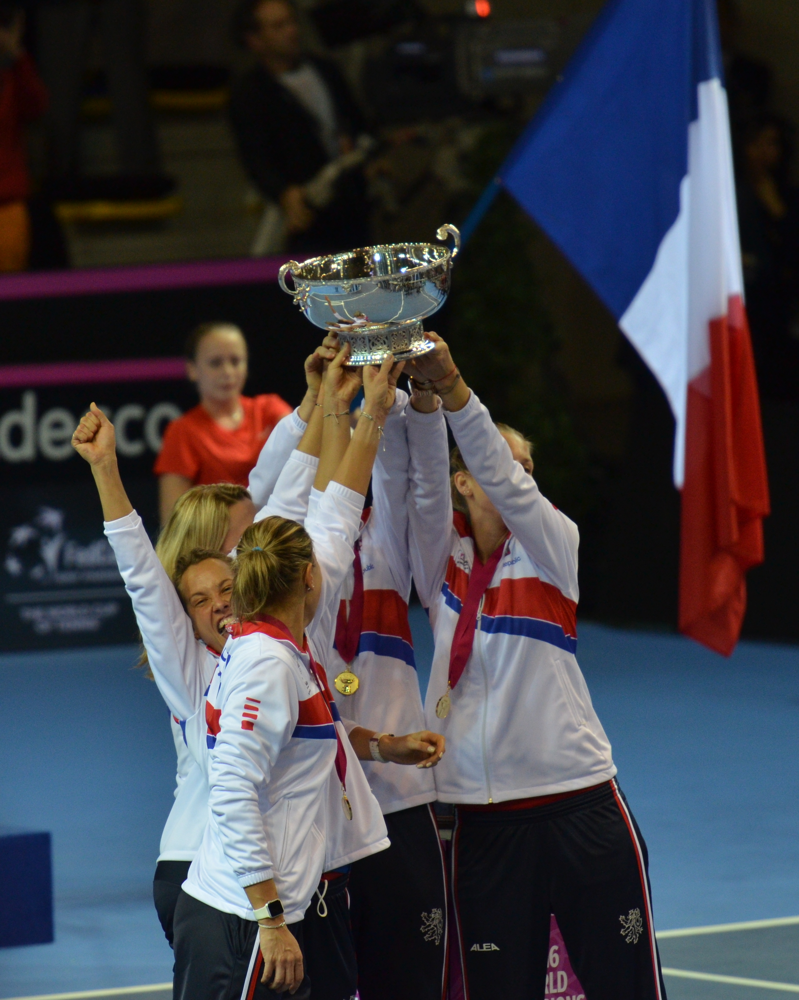

O tênis feminino terá uma de suas principais competições por equipes em destaque na última semana de setembro. A Billie Jean King Cup 2026 reúne oito seleções na Shenzhen Bay Sports Centre Arena, na China, para definir a campeã mundial de uma competição que combina tradição, rivalidade entre países e a pressão característica dos confrontos eliminatórios.
Diferentemente dos torneios individuais do circuito profissional, a Billie Jean coloca as tenistas em quadra representando suas seleções. O resultado não depende exclusivamente de uma atleta: cada confronto envolve partidas de simples e duplas, exigindo profundidade de elenco e decisões estratégicas das capitãs.
A edição de 2026 terá seis dias de competição, quatro confrontos de quartas de final, duas semifinais e a grande decisão. A Itália chega como atual bicampeã, enquanto a República Tcheca representa uma das tradições mais vitoriosas da história do torneio.
O que é o torneio
A Billie Jean King Cup é a principal competição internacional de tênis feminino entre seleções nacionais. Organizada no âmbito da Federação Internacional de Tênis (ITF), tem uma trajetória iniciada em 1963, quando foi criada com o nome de Federation Cup.
A competição posteriormente passou a ser conhecida como Fed Cup e, em setembro de 2020, recebeu o nome de Billie Jean King Cup, em homenagem à ex-tenista norte-americana Billie Jean King.
A homenagem reconhece uma das figuras mais importantes da história do tênis feminino, tanto pelas conquistas dentro das quadras quanto por sua atuação em defesa da igualdade de oportunidades e premiações no esporte.
Billie Jean King também participou da primeira edição do torneio, em 1963, quando os Estados Unidos conquistaram o título diante da Austrália.
Ao longo das décadas, a competição ampliou sua dimensão internacional e tornou-se uma referência para o tênis feminino por equipes. Em 2026, um recorde de 148 países se inscreveu nos diferentes níveis da edição.
Assim como a Copa Davis, tradicional competição por equipes do tênis masculino, a Billie Jean King Cup coloca o orgulho nacional no centro da disputa. As duas competições compartilham uma característica fundamental: transformar um esporte tradicionalmente individual em confrontos coletivos, nos quais a força do elenco, a estratégia e o desempenho sob pressão podem ser tão importantes quanto o ranking das atletas.
A história da Billie Jean King Cup reúne algumas das maiores estrelas do tênis feminino. Entre as campeãs mais conhecidas estão:
- Chris Evert (EUA): oito títulos, sendo a maior vencedora da história.
- Billie Jean King (EUA): sete títulos como atleta e outros três como capitã.
- Serena Williams (EUA): campeã em 1999, integrando a equipe norte-americana ao lado de sua irmã Venus.
- Martina Navratilova (Tchecoslováquia/EUA): quatro títulos, representando os dois países durante sua trajetória.
- Steffi Graf (Alemanha): campeã em 1987 e 1992.
- Petra Kvitova (República Tcheca): seis títulos, integrando uma das gerações mais vitoriosas da competição.
- Arantxa Sánchez Vicario (Espanha): cinco títulos, protagonista do período de domínio espanhol nos anos 1990.
- Conchita Martínez (Espanha): cinco títulos, formando uma parceria histórica com Arantxa Sánchez Vicario.
- Justine Henin (Bélgica): campeã em 2001, na única conquista belga até 2025.
- Jasmine Paolini (Itália): campeã em 2024 e 2025, chega à edição de 2026 buscando o tricampeonato consecutivo.
- Sara Errani (Itália): cinco títulos, incluindo as conquistas de 2024 e 2025. Está entre as maiores vencedoras da história do torneio.
A disputa pelo título de 2026
A fase final será realizada na Shenzhen Bay Sports Centre Arena, em Shenzhen, na China, entre 22 e 27 de setembro.
Os confrontos acontecerão em quadra dura coberta, reunindo as oito seleções classificadas para a disputa do título.
A China participa como país-sede, enquanto as outras sete equipes conquistaram suas vagas na fase classificatória da competição.
O modelo concentra todos os confrontos decisivos em uma única cidade, permitindo que as seleções disputem o título em uma sequência de partidas eliminatórias.
As seleções classificadas para a fase final são:
- República Tcheca
- Grã-Bretanha
- Espanha
- Cazaquistão
- Ucrânia
- Bélgica
- China
- Itália
Entre as participantes estão países com históricos importantes na competição e seleções que procuram ampliar sua presença nas fases decisivas do tênis feminino internacional.
A República Tcheca possui 11 títulos, considerando também as conquistas da antiga Tchecoslováquia, cujo histórico é reconhecido oficialmente como parte de sua trajetória.
A Itália soma seis conquistas, incluindo os títulos consecutivos de 2024 e 2025. Já a Espanha venceu a competição cinco vezes.
A Grã-Bretanha, apesar de ter participado de quatro finais, ainda busca seu primeiro título.
Principais tenistas que estarão na competição
A fase final da Billie Jean King Cup reunirá campeãs de Grand Slam, medalhistas olímpicas e nomes importantes do circuito feminino. Entre os destaques das oito seleções estão:
- República Tcheca: Linda Noskova, campeã de Wimbledon em 2026, Karolina Muchova e Katerina Siniakova, uma das principais duplistas do mundo.
- Grã-Bretanha: Katie Boulter e Sonay Kartal.
- Espanha: Cristina Bucsa, Jessica Bouzas Maneiro e Sara Sorribes Tormo.
- Cazaquistão: Yulia Putintseva e Anna Danilina, especialista em duplas.
- Ucrânia: Elina Svitolina e Dayana Yastremska.
- Bélgica: Hanne Vandewinkel e Greet Minnen.
- China: Zheng Qinwen, campeã olímpica de simples em Paris 2024, e Zhang Shuai.
- Itália: Jasmine Paolini e Sara Errani, campeãs olímpicas de duplas em Paris 2024, além de Elisabetta Cocciaretto.
Ausências importantes
A fase final também terá baixas relevantes. A cazaque Elena Rybakina, inicialmente convocada, desistiu da competição para priorizar sua recuperação física. A Ucrânia não contará com Marta Kostyuk, enquanto a Bélgica disputará o torneio sem Elise Mertens.
Confrontos das quartas de final
O mata-mata começa nesta terça-feira, 22 de setembro, com o confronto entre República Tcheca e Grã-Bretanha.
Na quarta-feira, Espanha e Cazaquistão entram em quadra para definir a segunda semifinalista.
Os outros dois confrontos das quartas serão disputados na quinta-feira, 24 de setembro, no horário local de Shenzhen. Ucrânia e Bélgica abrem a programação, enquanto China e Itália encerram a fase.
Confira os jogos e os horários de início, considerando o fuso de Brasília:
22 de setembro — Terça-feira
República Tcheca x Grã-Bretanha — 6h
23 de setembro — Quarta-feira
Espanha x Cazaquistão — 6h
Ucrânia x Bélgica — 23h
24 de setembro — Quinta-feira
China x Itália — não antes das 6h
O chaveamento das semifinais
A organização definiu duas partes da chave, estabelecendo previamente o caminho das seleções até a decisão.
A programação está organizada da seguinte maneira:
25 de setembro — Sexta-feira
Semifinal 1 — 6h de Brasília
Vencedor de República Tcheca x Grã-Bretanha contra vencedor de Espanha x Cazaquistão.
26 de setembro — Sábado
Semifinal 2 — 6h de Brasília
Vencedor de Ucrânia x Bélgica contra vencedor de China x Itália.
A grande final da Billie Jean King Cup 2026 acontecerá no domingo, 27 de setembro, às 6h da manhã, pelo horário de Brasília.
A decisão será realizada na Shenzhen Bay Sports Centre Arena, encerrando a programação de seis dias na China.
Como funciona o formato da competição
Uma das características mais importantes da Billie Jean King Cup é seu sistema de disputa por confrontos entre seleções.
Na fase final de 2026, cada duelo entre dois países será composto por até três partidas:
- Primeira partida de simples.
- Segunda partida de simples.
- Partida de duplas, caso necessária para definir o confronto.
A primeira seleção que conquistar duas vitórias garante a classificação para a fase seguinte.
Assim, se um país vencer as duas partidas de simples, o confronto estará encerrado sem a necessidade de disputar as duplas.
Caso cada seleção vença uma partida individual, o resultado será definido pelas duplas, aumentando a importância de atletas especializadas nessa modalidade.
Todas as partidas serão disputadas em melhor de três sets, com tie-break e sistema tradicional de vantagens.
Esse formato torna a montagem das equipes especialmente importante. Além das principais tenistas de simples, as capitãs precisam considerar as alternativas disponíveis para uma eventual decisão nas duplas.
A capacidade de adaptação durante o confronto pode ser determinante, especialmente porque o calendário concentra as partidas decisivas em poucos dias.
Onde assistir à Billie Jean King Cup 2026
A ESPN aparece na relação oficial de detentores dos direitos de transmissão da competição para o Brasil.
A organização também disponibiliza transmissões pela plataforma oficial da competição e pelo aplicativo World Cup of Tennis em territórios sem restrições geográficas de direitos.
A disponibilidade de cada partida depende da programação da emissora.
A busca pelo tricampeonato consecutivo
Um dos principais elementos históricos da edição de 2026 é a tentativa da Itália de conquistar o terceiro título consecutivo.
A seleção italiana venceu a competição em 2024, diante da Eslováquia, e voltou a levantar o troféu em 2025, quando superou os Estados Unidos na final.
Com seis conquistas no histórico da competição, o país chega à China defendendo uma sequência importante no tênis feminino por equipes.
O primeiro desafio será justamente contra as anfitriãs chinesas, em um confronto que combina a experiência das atuais campeãs com o fator local.
A República Tcheca, por sua vez, busca encerrar um período sem títulos iniciado após sua última conquista, em 2018.
São trajetórias diferentes que ajudam a explicar a importância da Billie Jean King Cup no calendário internacional: o torneio permite que seleções com tradições consolidadas e equipes em busca de conquistas históricas disputem diretamente o mesmo troféu.
A edição de Shenzhen será decidida em apenas seis dias. Entre 22 e 27 de setembro, oito países entrarão na disputa, mas somente uma seleção encerrará a competição como campeã mundial do tênis feminino por equipes.